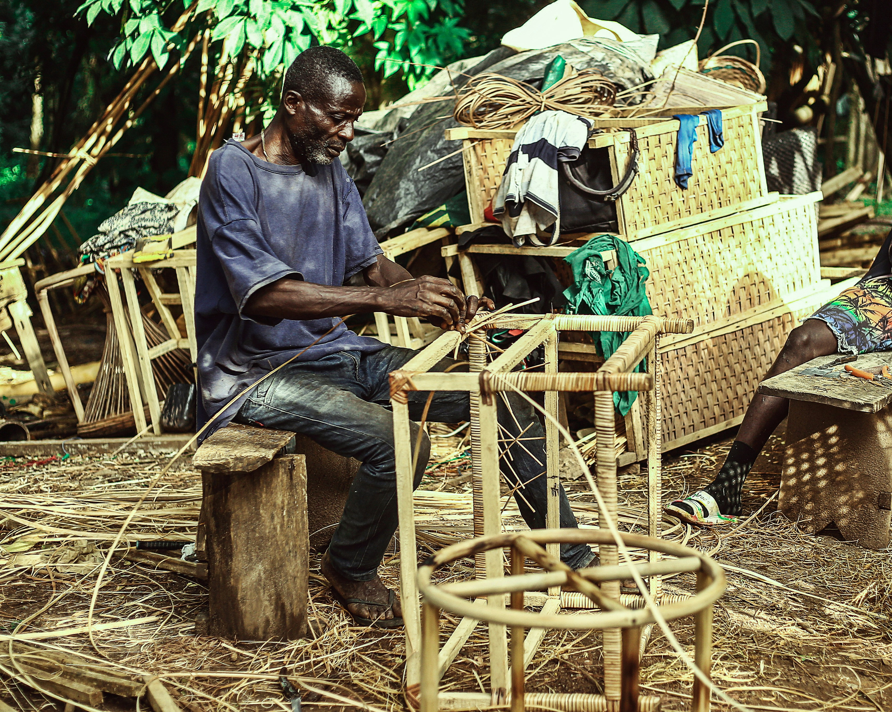

My Work



Empowering Gambian communities through technology and sustainable development.
I'm a CorpsAfrica/Gambia volunteer community development facilitator with a passion for technology, networking, and programming. I'm certified by Cisco Network Academy and as an AI Prompt Engineer.
Creating effective AI prompts and solutions to optimize AI interactions and outputs.
Designing and implementing network infrastructure solutions for organizations and communities.
Facilitating community-led development initiatives and programs that empower local communities.
"To leverage technology and community development expertise to create sustainable solutions that empower underserved communities in The Gambia, bridging the digital divide while fostering local capacity building and economic growth."
Designing and implementing network infrastructure solutions for organizations and communities.
“Demba's work with our community through CorpsAfrica has been transformative. He didn't just bring technical solutions; he empowered our youth with digital skills that will serve generations.” - Lamin Jatta., Community Leader, Brikama
“Demba bridges the gap between technical implementation and community adoption like few professionals I've encountered. His unique blend of skills is remarkable.” - Fatou Sowe., IT Director, Gambia Tech Solutions
“Demba exemplifies what CorpsAfrica stands for - local solutions to local challenges. His work has become a model for our entire organization..” - Foday Bojang., Director CorpsAfrica/Gambia